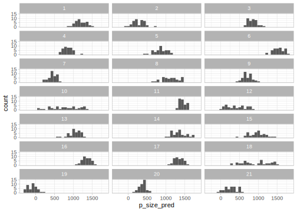

12.2 Solutions for chapter 4
- Exercise 4.6.1.1
We can use a similar approach to the one used in normal_predictive_distribution_fast with pmap_dfr that iterates over the elements of each prior distribution and simulates values for each c_load.16
N_samples <- 1000
N_obs <- nrow(df_pupil_data)
alpha <- rnorm(N_samples, 1000, 500)
beta <- rnorm(N_samples, 0, 100)
sigma <- rtnorm(N_samples, 100, 10, a = 0)
prior_pred_pupil <- pmap_dfr(list(alpha, beta, sigma),
function(a, b, s){
tibble(p_size_pred = rnorm(N_obs, a + df_pupil_data$c_load * b, s),
c_load = df_pupil_data$c_load)
}, .id = "iter") %>%
# .id is always a string and needs to be converted to a number
mutate(iter = as.numeric(iter))We plot some instances of the prior predictive distributions to evaluate them:
prior_pred_pupil %>%
filter(iter <= 18) %>%
ggplot(aes(p_size_pred)) +
geom_histogram() +
facet_wrap(~iter, ncol = 3)
They don’t look too good, we are assuming that pupil sizes can be even negative!
- Exercise 4.6.1.2
Our choice of prior for \(\sigma\) might have been too wide leading to too much variation in the prior predictive distribution. We’ll check if our estimates change when we select a more reasonable prior.
\[\begin{equation} \sigma \sim Normal_+(100, 100) \end{equation}\]
fit_pupil_sigma2 <- brm(p_size ~ 1 + c_load,
data = df_pupil_data,
family = gaussian(),
prior = c(
prior(normal(1000, 500), class = Intercept),
prior(normal(100, 100), class = sigma),
prior(normal(0, 100), class = b, coef = c_load)
)) ## Family: gaussian
## Links: mu = identity; sigma = identity
## Formula: p_size ~ 1 + c_load
## Data: df_pupil_data (Number of observations: 41)
## Samples: 4 chains, each with iter = 2000; warmup = 1000; thin = 1;
## total post-warmup samples = 4000
##
## Population-Level Effects:
## Estimate Est.Error l-95% CI u-95% CI Rhat
## Intercept 700.98 20.14 661.89 740.45 1.00
## c_load 34.18 12.06 10.37 57.36 1.00
## Bulk_ESS Tail_ESS
## Intercept 3648 2833
## c_load 3750 2802
##
## Family Specific Parameters:
## Estimate Est.Error l-95% CI u-95% CI Rhat
## sigma 127.62 14.58 103.11 159.26 1.00
## Bulk_ESS Tail_ESS
## sigma 3159 2976
##
## Samples were drawn using sampling(NUTS). For each parameter, Bulk_ESS
## and Tail_ESS are effective sample size measures, and Rhat is the potential
## scale reduction factor on split chains (at convergence, Rhat = 1).We see that our estimates remain virtually identical.
- Exercise 4.6.1.3
As we did with pupil size, we first create a centered version of trial:
We’ll fit a model with the following likelihood:
\[\begin{equation} p\_size_n \sim Normal(\alpha + c\_load_n \cdot \beta_1 + c\_trial_n \cdot \beta_2, \sigma ) \end{equation}\]
The formula will look like this 1 + c_load + c_trial. We can see the new priors that the model needs by doing the following:
## prior class coef group resp
## 1 student_t(3, 687, 125) Intercept
## 2 b
## 3 b c_load
## 4 b c_trial
## 5 student_t(3, 0, 125) sigma
## dpar nlpar bound
## 1
## 2
## 3
## 4
## 5For simplicity, we assign the same prior distribution to both \(\beta\) parameters.
fit_pupil_trial <- brm(p_size ~ 1 + c_load + c_trial,
data = df_pupil_data,
family = gaussian(),
prior = c(
prior(normal(1000, 500), class = Intercept),
prior(normal(0, 1000), class = sigma),
prior(normal(0, 100), class = b)
)) ## Family: gaussian
## Links: mu = identity; sigma = identity
## Formula: p_size ~ 1 + c_load + c_trial
## Data: df_pupil_data (Number of observations: 41)
## Samples: 4 chains, each with iter = 2000; warmup = 1000; thin = 1;
## total post-warmup samples = 4000
##
## Population-Level Effects:
## Estimate Est.Error l-95% CI u-95% CI Rhat
## Intercept 701.43 17.48 667.47 736.45 1.00
## c_load 32.32 10.05 12.18 51.68 1.00
## c_trial -5.47 1.47 -8.38 -2.56 1.00
## Bulk_ESS Tail_ESS
## Intercept 4717 2550
## c_load 4302 3095
## c_trial 4015 3195
##
## Family Specific Parameters:
## Estimate Est.Error l-95% CI u-95% CI Rhat
## sigma 110.00 12.85 88.40 138.93 1.00
## Bulk_ESS Tail_ESS
## sigma 4194 3094
##
## Samples were drawn using sampling(NUTS). For each parameter, Bulk_ESS
## and Tail_ESS are effective sample size measures, and Rhat is the potential
## scale reduction factor on split chains (at convergence, Rhat = 1).The summary of the posterior tells us that the most likely values of the effect of load will be around the mean of the posterior, 32.32, and we can be 95% certain that the true value of the effect of load (given the model and the data) lies between 12.18 and 51.68. As before, as load increases the pupil size increases. The mean of the posterior for the effect of trial will be -5.47, with a 95% credible interval of \([-8.38, -2.56]\); this is telling us that as the trials proceed further, the pupil size is reduced.
- Exercise 4.6.2.1
We look at what happens between the last two trials in milliseconds in the following way:
alpha_samples <- posterior_samples(fit_press_trial)$b_Intercept
beta_samples <- posterior_samples(fit_press_trial)$b_c_trial
last_trial <- df_noreading_data$c_trial %>% max
effect_end_ms <- exp(alpha_samples + last_trial * beta_samples) -
exp(alpha_samples + (last_trial - 1)* beta_samples)
c(mean = mean(effect_end_ms), quantile(effect_end_ms, c(.025,.975)))## mean 2.5% 98%
## 0.097 0.072 0.122- Exercise 4.6.2.2
We first create the new predictors:
df_noreading_data <- df_noreading_data %>%
mutate(c_log_trial = log(trialn) - mean(log(trialn)),
c_sqrt_trial = sqrt(trialn) - mean(sqrt(trialn)))We start with log trial. The slope (\(\beta\)) now represents the change in log reaction times when we move from the centered log transformed trial (c_log_trial) 0 to 1, which corresponds to going from trial 1 to trial “2.72” (because \(\exp(0)= 1\) and \(\exp(1) = 2.72\)). However the scale is not linear, and thus when we move from log transformed trials 2 to 3, it represents going from trial “7.39” to trial “20.09” (because \(\exp(2)= 7.39\) and \(\exp(3) = 20.09\)). This means that our prior for \(\beta\) from section 4.2 might be too restrictive, one unit for the new \(\beta\) can be much more than one trial. We change the prior for \(\beta\) in the next model to \(Normal(0, 1)\):
fit_press_log_trial <- brm(rt ~ 1 + c_log_trial,
data = df_noreading_data,
family = lognormal(),
prior = c(
prior(normal(6, 1.5), class = Intercept),
prior(normal(0, 1), class = sigma),
prior(normal(0, 1), class = b, coef = c_log_trial)
)
)We will look at the effect in milliseconds for the middle of the experiment. Thus we need to know c_log_trial at the middle and one trial before in our experiment. (Notice that it won’t be 0 and -1 as before).
middle_log <- df_noreading_data %>%
filter(c_trial == 0) %>%
pull(c_log_trial)
## The old school way would be <- df_noreading_data[c_trial == 0]$c_log_trial
middle_m1_log <- df_noreading_data %>%
filter(c_trial == -1) %>%
pull(c_log_trial)alpha_samples <- posterior_samples(fit_press_log_trial)$b_Intercept
beta_samples <- posterior_samples(fit_press_log_trial)$b_c_log_trial
effect_middle_ms <- exp(alpha_samples + middle_log * beta_samples) -
exp(alpha_samples + middle_m1_log * beta_samples)
c(mean = mean(effect_middle_ms), quantile(effect_middle_ms, c(.025,.975)))## mean 2.5% 98%
## 0.059 0.047 0.071We can do the same for square-root-transformed trials
fit_press_sqrt_trial <- brm(rt ~ 1 + c_sqrt_trial,
data = df_noreading_data,
family = lognormal(),
prior = c(
prior(normal(6, 1.5), class = Intercept),
prior(normal(0, 1), class = sigma),
prior(normal(0, 1), class = b, coef = c_sqrt_trial)
)
)middle_sqrt <- df_noreading_data %>%
filter(c_trial == 0) %>%
pull(c_sqrt_trial)
middle_m1_sqrt <- df_noreading_data %>%
filter(c_trial == -1) %>%
pull(c_sqrt_trial)alpha_samples <- posterior_samples(fit_press_sqrt_trial)$b_Intercept
beta_samples <- posterior_samples(fit_press_sqrt_trial)$b_c_sqrt_trial
effect_middle_ms <- exp(alpha_samples + middle_sqrt * beta_samples) -
exp(alpha_samples + middle_m1_sqrt * beta_samples)
c(mean = mean(effect_middle_ms), quantile(effect_middle_ms, c(.025,.975)))## mean 2.5% 98%
## 0.083 0.065 0.101Let’s also look at the descriptive adequacy of these three models:
# I use imap to iterate accross the fit of the three models,
# and create long df with predictions of the three models
df_noreading_data_pred <-
imap_dfr(list(raw = fit_press_trial, log = fit_press_log_trial, sqrt = fit_press_sqrt_trial),
function(fit, model){
posterior_predict(fit, nsamples = 1000) %>%
array_branch(margin = 1) %>%
map_dfr( function(yrep_iter) {
df_noreading_data %>%
mutate(rt = yrep_iter,
model = model)
}, .id = "iter") %>%
mutate(iter = as.numeric(iter))
})We see that for the range of trials that we have in our experiment, the three models make very similar predictions:
df_noreading_pred_summary <- df_noreading_data_pred %>%
# I create 12 intervals of trials
mutate(inter = cut(trialn ,breaks = 12)) %>%
group_by(model, iter, inter) %>%
summarize(rt = mean(rt))
# observed means:
df_noreading_summary<- df_noreading_data %>%
mutate(inter = cut(trialn ,breaks = 12)) %>%
group_by(inter) %>%
summarize(rt = mean(rt))
ggplot(df_noreading_pred_summary, aes(rt)) +
geom_histogram(alpha=.5, aes(fill = model), position = 'identity') +
geom_vline(aes(xintercept= rt), data= df_noreading_summary)+
facet_wrap(inter ~ .)
- Exercise 4.6.3.1
We don’t just center tested, because the number is relative to the number of items that could be recalled. For this reason we create a relative position column, that is position relative to the set size, so that 0 corresponds to the first position and 1 to the last one.
We assign the same priors to all slopes of our model:
fit_recall_tested <- brm(correct ~ 1 + c_set_size + c_rel_pos,
data = df_recall_data,
family = bernoulli(link = logit),
prior = c(
prior(normal(0, 1.5), class = Intercept),
prior(normal(0, .1), class = b)
))## Family: bernoulli
## Links: mu = logit
## Formula: correct ~ 1 + c_set_size + c_rel_pos
## Data: df_recall_data (Number of observations: 92)
## Samples: 4 chains, each with iter = 2000; warmup = 1000; thin = 1;
## total post-warmup samples = 4000
##
## Population-Level Effects:
## Estimate Est.Error l-95% CI u-95% CI Rhat
## Intercept 1.91 0.30 1.35 2.54 1.00
## c_set_size -0.18 0.08 -0.34 -0.03 1.00
## c_rel_pos 0.01 0.10 -0.19 0.20 1.00
## Bulk_ESS Tail_ESS
## Intercept 2962 2912
## c_set_size 3595 2763
## c_rel_pos 4228 3135
##
## Samples were drawn using sampling(NUTS). For each parameter, Bulk_ESS
## and Tail_ESS are effective sample size measures, and Rhat is the potential
## scale reduction factor on split chains (at convergence, Rhat = 1).We generate posterior predictive distributions…
df_recall_pred <- posterior_predict(fit_recall_tested,
nsamples = 1000) %>%
array_branch(margin = 1) %>%
map_dfr( function(yrep_iter) {
df_recall_data %>%
mutate(correct = yrep_iter)
}, .id = "iter") %>%
mutate(iter = as.numeric(iter))and plots that show the proportion of correct answers in our posterior predictive distribution contingent on the position and the set size.
df_recall_pred_summary <- df_recall_pred %>%
group_by(iter, set_size, tested) %>%
summarize(accuracy = mean(correct))
# observed means:
df_recall_summary<- df_recall_data %>%
group_by(set_size, tested) %>%
summarize(accuracy = mean(correct))
ggplot(df_recall_pred_summary, aes(accuracy)) +
geom_histogram(alpha = .7)+
geom_vline(aes(xintercept= accuracy), size = .5, linetype = "dashed", data= df_recall_summary)+
facet_grid(set_size ~ tested, labeller = label_both)+
scale_x_continuous(breaks = c(0, .5, 1))
It seems that the position doesn’t matters too much except for the largest set size, where the first positions have lower accuracy than the later ones. Our simple model without an interaction is unable to capture this, but we should look at more data (probably the other subjects) to know if there is consistency in this pattern.